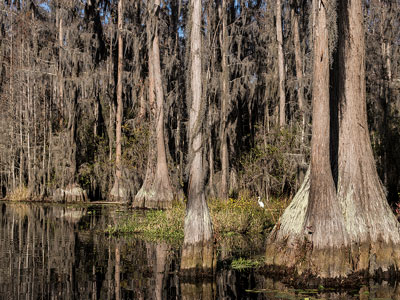
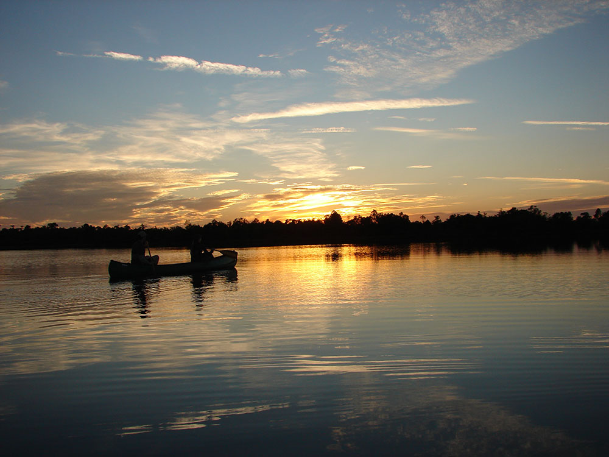
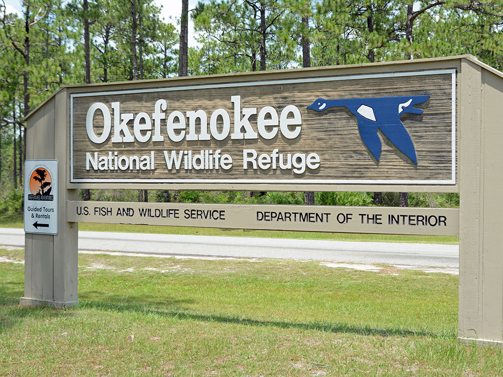
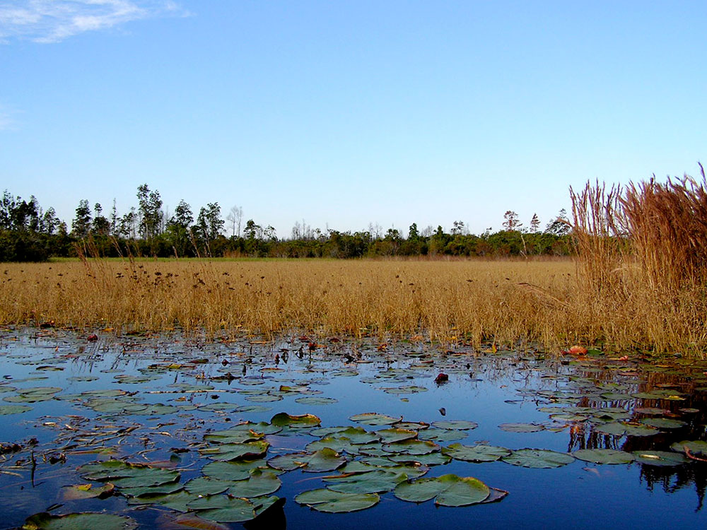
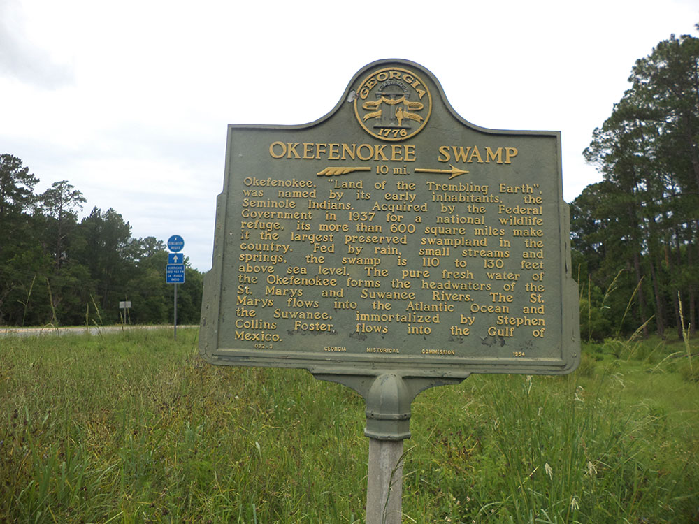
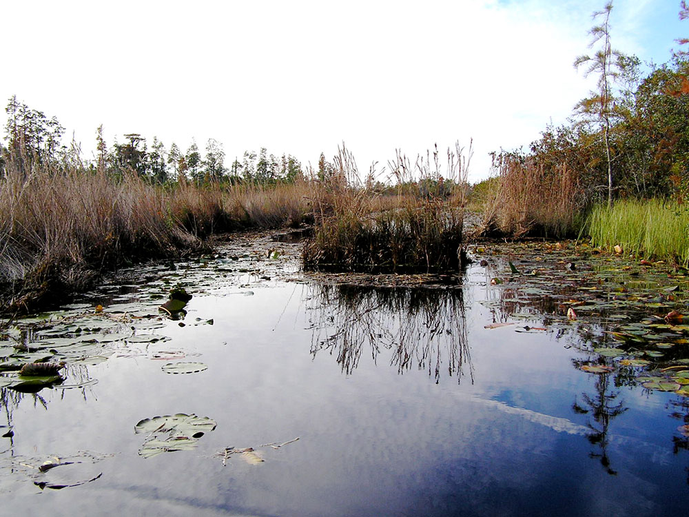
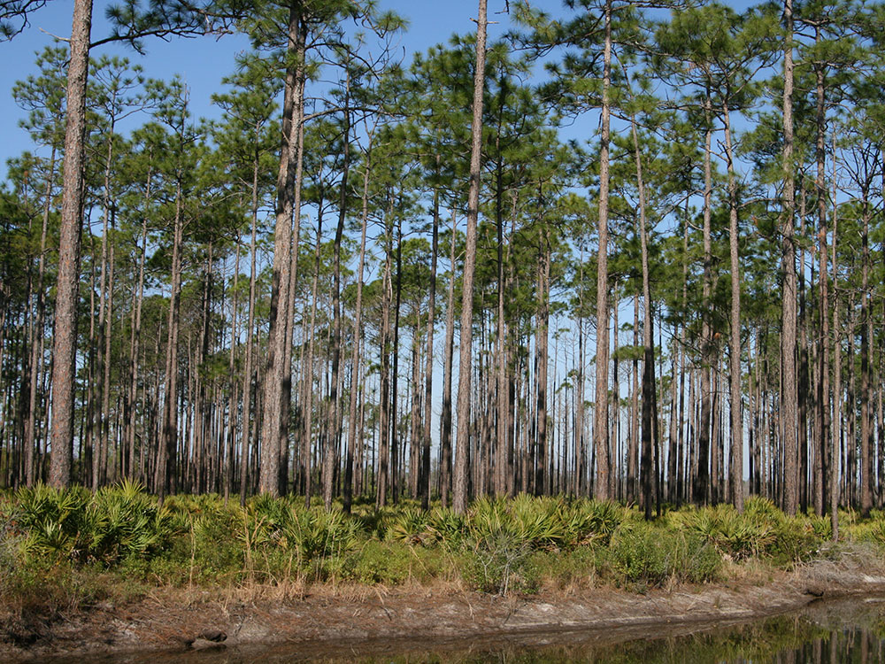
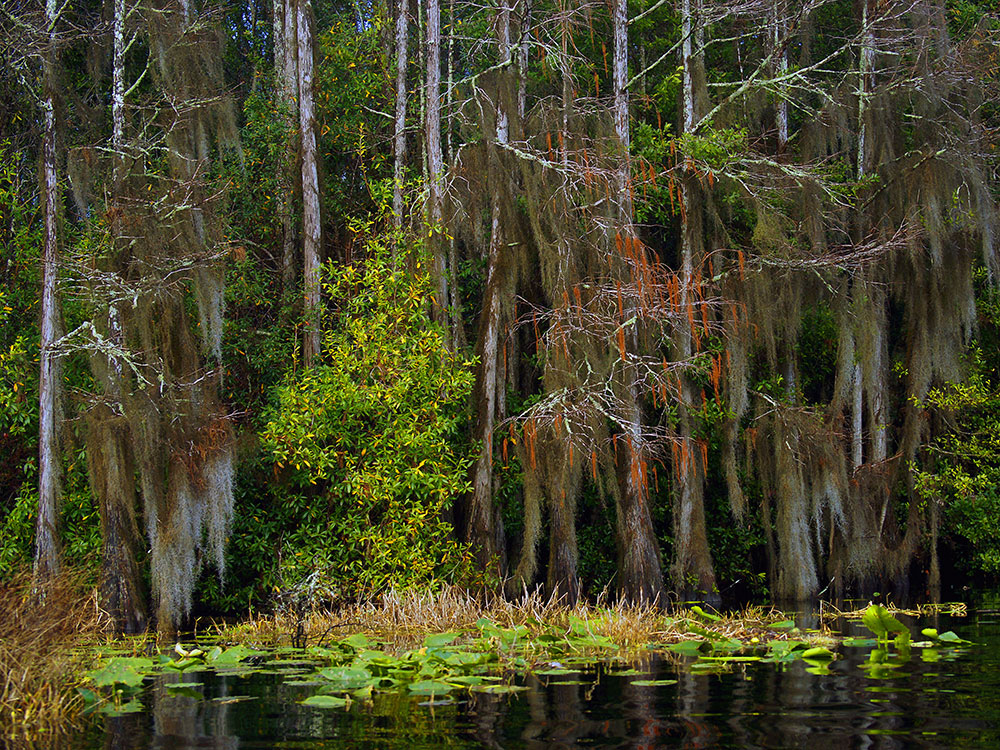

402,000-acre refuge established in 1937 to protect a majority of the 438,000 acre (1,772 km2) Okefenokee Swamp, a vast bog inside a huge, saucer-shaped depression that was once part of the ocean floor
General Information
How to Get There
Overview
Okefenokee National Wildlife Refuge protects most of the Okefenokee Swamp, a 438,000-acre blackwater wilderness in southeastern Georgia and one of the largest intact freshwater ecosystems in the world. The name is a Native American word meaning "land of the trembling earth," a reference to peat deposits so unstable that trees and shrubs quiver underfoot. The refuge was established in 1937 to protect the swamp's wildlife and habitats, and it covers about 402,000 acres, with the Okefenokee also recognized as a Wetland of International Importance. Tea-colored water, tinted by tannins from decaying vegetation, feeds the Suwannee River and nourishes open prairies, cypress forests and pine uplands that shelter alligators, black bears, river otters, more than 200 bird species and threatened species like wood storks and red-cockaded woodpeckers. People come for canoe and kayak trails, boardwalks, wildlife watching and a rare sense of remote wilderness.
Access
The refuge has three main entrances, listed in the Plan Your Visit section below, each with a different character. The east entrance near Folkston, in the southeast corner of Georgia, is the main refuge entrance and has the visitor center, Swamp Island Drive and the boardwalk. The west entrance is Stephen C. Foster State Park, and the north entrance is Okefenokee Swamp Park near Waycross. Nearly all visitors arrive by car, and Jacksonville, Florida is the closest major airport, roughly an hour and a half from Folkston. Services inside the swamp are limited, so bring water, food and bug protection.
Seasons
Fall through spring is the most comfortable time to visit, with cooler temperatures that make paddling and walking pleasant and fewer biting insects. Winter brings cold mornings, migratory birds and wintering sandhill cranes, and wildlife viewing is good year-round. Summers are hot, humid and buggy, with frequent thunderstorms, though alligators and many birds are easy to see. Water levels vary with rainfall, and in dry periods some paddling trails can be hard to navigate, so check conditions before planning an overnight canoe trip. Wildfires occasionally affect the swamp, and the overnight canoe shelters require advance reservations.
Things to Do
Explore North America's Largest Blackwater Swamp
Okefenokee National Wildlife Refuge protects more than 400,000 acres of wetlands, making it one of the largest intact freshwater ecosystems in North America. Visitors can experience vast prairies, cypress forests, winding waterways, and diverse wildlife while exploring one of Georgia's most iconic natural landscapes.
Take a Boat or Canoe Adventure
Paddling is one of the best ways to experience the Okefenokee. Canoe and kayak trails wind through the swamp's waterways, allowing visitors to travel among cypress trees, floating vegetation, and remote wetlands. Guided boat tours are also available and provide opportunities to learn about the refuge's ecology and history.
View Wildlife
The refuge is renowned for its abundant wildlife, including American alligators, black bears, river otters, white-tailed deer, turtles, snakes, and more than 200 species of birds. Wildlife viewing is good year-round, particularly along boardwalks, trails, and waterways.
Visit the Richard S. Bolt Visitor Center
The visitor center features exhibits about the swamp's ecology, history, and wildlife. Educational displays help visitors understand the unique characteristics of the Okefenokee ecosystem, while observation areas provide opportunities to spot alligators and birds near the refuge entrance.
Look for Wood Storks and Sandhill Cranes
Okefenokee is one of the premier birding destinations in the Southeast, with wood storks, sandhill cranes, great blue herons, egrets, red-shouldered hawks, and many migratory species.
Top Trails
Boardwalk Trail
Length: Approximately 0.75 miles round trip
Elevation Gain: Minimal
Difficulty: Easy
This accessible boardwalk extends into the swamp and provides close-up views of wetland habitats, aquatic plants, birds, and alligators. Interpretive exhibits along the route help visitors learn about the ecology of the Okefenokee while enjoying one of the refuge's most popular walks.
Chesser Island Homestead Trail
Length: Approximately 1 mile round trip
Elevation Gain: Minimal
Difficulty: Easy
This trail leads to the historic Chesser Island Homestead, where visitors can learn about pioneer life in and around the swamp. The restored homestead and interpretive exhibits provide insight into the challenges faced by early settlers of the region.
Pioneer Island Trail
Length: Approximately 2.5 miles round trip
Elevation Gain: Minimal
Difficulty: Easy to Moderate
This scenic trail follows former railroad grades through pine forests and wetlands before reaching observation points overlooking the swamp. The route offers excellent opportunities for wildlife viewing and experiencing the refuge's diverse habitats.
Plan Your Visit
| Entrance | Location | Best For |
|---|---|---|
| East (main refuge entrance) | 11 miles southwest of Folkston | Richard S. Bolt Visitor Center, Chesser Island, the 9-mile Swamp Island Drive, boardwalk, and canoe trails |
| West | Stephen C. Foster State Park, 17 miles east of Fargo | Guided boat tours, canoe rentals, and camping |
| North | Okefenokee Swamp Park, 8 miles south of Waycross | Boat tours, the swamp train, and an observation tower |
- Entrance fees are required at each entrance.
- 121 miles of water trails include six marked boating trails and seven overnight shelters; 70 miles are open to motorboats of 10 horsepower or less.
- The Bolt Visitor Center (built 1967) has exhibits and a 100-seat auditorium.
Visitor Centers
The Richard S. Bolt Visitor Center at the east entrance is the refuge's main visitor facility. It has exhibits on the swamp's ecology, history and wildlife, a 100-seat auditorium, and observation areas near the entrance for spotting birds and alligators. Staff can provide maps, information on paddling trails and current water conditions. Stephen C. Foster State Park at the west entrance also has a visitor center, and Okefenokee Swamp Park at the north entrance has its own exhibits and wildlife displays.
Camping and Lodging
There are no traditional campgrounds within the refuge itself, but wilderness canoe trails include seven overnight shelters for paddlers with reservations. Stephen C. Foster State Park at the west entrance has a campground and cottages. Lodging is limited near the swamp, with small motels and restaurants in Folkston and in Waycross, about an hour from the north entrance. Larger selections of hotels are available in Kingsland and St. Marys (about an hour), and in Jacksonville, Florida, about 1.5 hours away. Laura S. Walker State Park near Waycross also has camping and cottages.
This article uses material from the Wikipedia article "Okefenokee National Wildlife Refuge", released under the Creative Commons Attribution-Share-Alike License 3.0, along with visitor information from the U.S. Fish and Wildlife Service.
Featured Locations

Florian Pépellin, Public domain, via Wikimedia Commons; Image Size Adjusted

Okefenokee Swamp Park
Most extensive blackwater swamp in North America and covers over 438,000 acres

Tabetha Moe, CC BY-SA 4.0, via Wikimedia Commons; Image Size Adjusted

Stephen C Foster State Park
State park located in the Okefenokee Swamp offering visitors several ways to explore the swamp's unique ecosystem

.jpg){kind=link}



pseabolt, CC BY 3.0, via Wikimedia Commons ; Image Size Adjusted



pseabolt, CC BY 3.0, via Wikimedia Commons ; Image Size Adjusted



Fsendek1904, CC BY-SA 4.0, via Wikimedia Commons; Image Size Adjusted